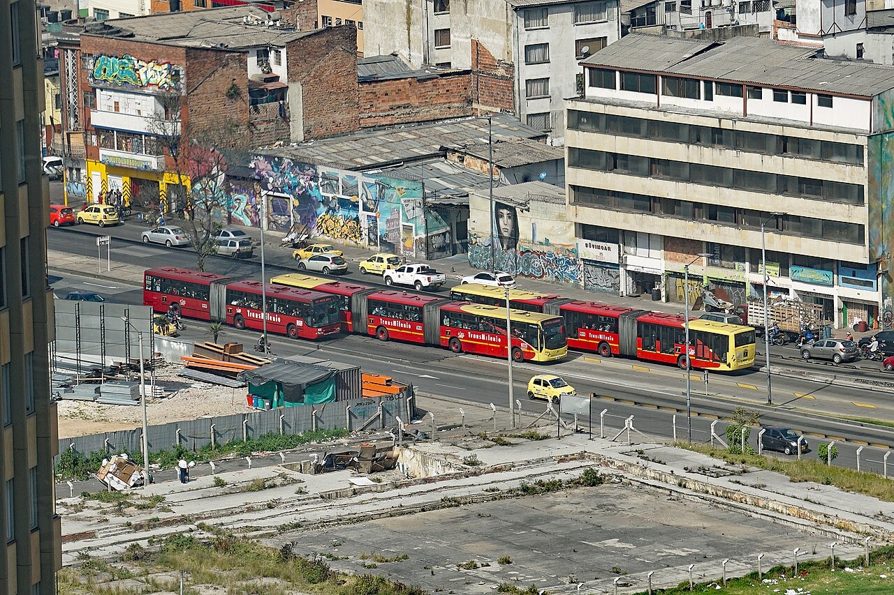

Part II · People and places · Module 6
Public transport and active modes
In October 2019 New York City took most cars off one of Manhattan's busiest crosstown streets during the day and gave it to buses. Within months the buses were up to a quarter faster and carried up to 30% more people. In August 2015 Houston redrew its bus network without spending much more money, planning to double the number of people living near a bus every 15 minutes. Between 2006 and 2010 Seville built a cycle network almost from scratch, and cycling went from almost nothing to more than 5% of all trips. This module asks what such decisions buy a city, for whom, and how to count it: in time, in space, and in health.
- The question
- What does a bus lane, a redesigned bus network or a cycle network buy a city, and for whom? And how much of the case rests on health benefits?
- What matters
- A street is a fixed amount of land, and a car lane moves the fewest people per meter of it. Buses become useful when they come often and on time, so frequency and reliability matter more than top speed. A network is worth more than its lines: a cycle track or a bus route is only as useful as what it connects to. How much service goes to busy corridors (many riders) and how much to thin areas (everyone has some service) is a value choice, not a technical one.
- Numbers to question
- How many riders or cyclists come from cars, and how many from walking or other buses. How waiting and crowding are valued. The delay to drivers, and whether it was computed with traffic that cannot adapt. The health benefit, which is often the largest item in a cycling case and rests on assumptions about who is newly active and whether they already counted their health when choosing.
- Levers
- Bus lanes, signal priority and fares: months. A network redesign at roughly the same budget: one to two years, mostly spent consulting. A connected cycle network: a few years (Seville took four). New rail: decades.
- Ask your analysts
- Did you count people or vehicles? Did you include waiting, transfers and crowding? Who loses service in the new network, and is anyone left below a minimum? What share of the benefit is health, which assumptions does it rest on, and what is the result without it?
- Compare modes by people moved per meter of street width, and state the assumptions behind such comparisons.
- Read a bus-lane decision in terms of \(W\): who gains and loses time, where crowding and congestion are counted, and which numbers decide it.
- Explain why frequency is the core of a usable transit network, state the ridership–coverage trade-off, and contrast it with the Swiss approach of guaranteed connections.
- Explain what makes BRT and commuter rail high-capacity, and how crowding enters the objective.
- Apply the Dutch requirements for cycle networks, and explain why connectivity matters more than kilometers built.
- Compute a health benefit with the WHO HEAT method, state its assumptions, and explain the main objections to adding it to an appraisal.
1. People per meter of street D
Traffic engineering counts vehicles per lane per hour. The welfare objective counts people, and Term D counts the land they use (Module 1). A useful bridge is person throughput per meter of street width: how many people one meter of street can move in an hour. The following figures are derived illustrations, not design values. They show orders of magnitude under stated assumptions; actual capacities depend on junctions, stops, enforcement and demand.
| Mode (one direction) | Assumptions | People/h | Width | People/h per meter |
|---|---|---|---|---|
| Car, urban signalized lane | 700–900 veh/h (signals take about half the time), 1.3 occupants | 900–1,200 | 3.5 m | ≈ 250–350 |
| Bus lane, mixed stops | 40 buses/h × 60 passengers | ≈ 2,400 | 3.5 m | ≈ 700 |
| BRT trunk with overtaking at stations | Bogotá's Avenida Caracas, commonly cited at about 45,000 passengers/h/direction | ≈ 45,000 | ≈ 7 m (two lanes) | ≈ 6,000 |
| Cycle track | Steady flow at 15 km/h, about 2 s headway per 1 m sub-lane | ≈ 1,800 per meter | 2 m | ≈ 1,800 |
| Footway | US Highway Capacity Manual walkway capacity, about 75 persons/min per meter (crowded) | ≈ 4,500 per meter | — | ≈ 4,500 (at capacity) |
| Metro (grade-separated) | Tokyo Metro Tōzai line, Kiba → Monzen-nakachō, 7:50–8:50: 27 ten-car trains, rated capacity 40,500, carrying 60,750 (FY2024) | 60,750 | not on street | — |
Two lessons follow. First, a car lane is the least space-efficient use of a street by an order of magnitude. That is why Term D, and not taste, pushes cities with high land values toward transit and active modes. Second, throughput is not welfare. A footway at capacity is unpleasant, and a Tōzai line train at 150% of its rated capacity is worse. The quality of the space enters Term A through comfort and crowding, which travelers weigh when they choose.
How to divide a street among these uses, and what a city can change in a year, is the subject of Module 12.
2. What a bus lane buys A E
The M14 buses crossing Manhattan on 14th Street carry about 28,000 riders a day. On 3 October 2019 the city's transport department started a pilot. From 6 a.m. to 10 p.m., only buses and trucks may drive straight through between Third and Ninth Avenues. Cars may still enter to reach the curb or a garage, but must turn right at the next corner. Passengers may be dropped off along the whole street, and loading zones remain.
The city reported bus speeds up by as much as 24% and ridership up by as much as 30%. In June 2020 the busway was made permanent.
Source: NYC DOT, 14th Street Busway (with links to the independent monitoring reports).
What did the city buy? Read it through \(W\).
- Bus riders gain time and reliability (Term A). Shorter in-vehicle time is the visible part. Reliability is often larger: a bus that arrives when expected means less time waiting at the stop and less time budgeted "just in case". Travelers value both (Module 2).
- New riders gain (Term A). People who switch to the faster bus do so because it is now better for them. Their gain is counted with the rule of a half (Module 1).
- Drivers may lose time (Term A). Drivers who used the street now take another route or mode. If the remaining street network is slower for everyone, that loss is in Term A too, because Term A is computed from everyone's travel times. It must not be subtracted again as a "congestion cost" in Term C (see "Where is congestion?" in Module 1).
- Operating cost falls (Term E). Faster buses complete each round trip sooner, so the same fleet and drivers can run more trips. This is often overlooked and can pay for the paint many times over.
- Fewer car-kilometers (Term C). Fewer crashes, less noise and fewer emissions, in proportion to the car trips that actually disappear.
Illustrative numbers. A street carries 50 buses an hour with 60 passengers each: 3,000 bus riders. One general traffic lane carries 900 car occupants. The city turns that lane into a bus lane.
- Bus riders save 4 minutes each, mostly at junctions and through more regular service: \(3{,}000 \times 4 = 12{,}000\) minutes, or 200 hours.
- Car occupants lose 2 minutes each in the first weeks, before anyone adapts: \(900 \times 2 = 1{,}800\) minutes, or 30 hours.
- Net gain: 170 person-hours in one peak hour, before counting reliability or operating savings. Even if drivers lost three times as much, bus riders would still gain more.
The result depends on two numbers: how many people ride the bus, and how much the drivers really lose once traffic has adapted. A model that holds car traffic fixed will overstate the drivers' loss, because some trips change route, time or mode (Module 5).
Where it fails. A bus lane on a street with few buses buys little and costs drivers real time. A bus lane that is not enforced is a parking lane. And a fast bus that comes every 30 minutes is still a bus few people can rely on. Speed is worth most where buses are frequent, which is the subject of the next section.
3. Designing a network people can use A E
Frequency is freedom
"Frequency is freedom" is the title of a chapter in Human Transit (2011), a book by the transit planner Jarrett Walker. If a bus comes every 20 minutes, a passenger who arrives at a random time waits 10 minutes on average. Travelers dislike waiting more than riding, roughly 1.5 to 2.5 times as much per minute, so those 10 minutes feel like 15–25 minutes on board. A long gap between buses also forces people to plan their day around the timetable, and makes every transfer a gamble.
When buses come every 10–15 minutes or less, people stop looking at timetables and just go to the stop ("turn up and go"). The exact threshold is a rule of thumb: Walker himself has pointed out that there is little hard evidence for where it lies, and real-time arrival information on phones may be moving it. Transfers then cost little. That changes what the system is. A set of lines each running to the center becomes a network, in which any point can be reached from any other with one change.
The constraint is the fleet and the drivers. The same buses can run one route often or two routes half as often. Frequency on one corridor is paid for by service elsewhere.
Ridership versus coverage
Walker frames network design as a choice between two goals. The ridership goal concentrates service on dense corridors where frequent buses attract many riders per hour of service. The coverage goal spreads service so that everyone lives near some bus, even if few use it. Within a fixed budget, more of one means less of the other. Walker argues that the split is a value judgment for elected officials, not a technical question for planners. He suggests stating it openly as a share of the budget, for example "60% of service for ridership, 40% for coverage".
In \(W\), this is a choice of group weights \(\omega_g\) and of access floors \(A_g\ge A_{\min}\) (Module 1). A pure ridership network maximizes the unweighted sum of everyone's access per euro. A coverage network buys a floor for low-density areas and for people without a car. Writing the split down is the honest equivalent of writing down \(\omega_g\).
Houston is a city built for cars (the introduction of this course starts there). In 2013–14 its transit agency, METRO, had a team of consultants, including Walker's firm, redraw the whole bus network at roughly the same operating cost. The new network, adopted by METRO's board in February 2015, shifted service from coverage toward ridership. It was organized around a grid of frequent lines with high-frequency service all day. Before the change about 534,000 people lived within half a mile of frequent service. The plan projected more than a million afterwards.
The new network started in August 2015. After public consultation the board added about 4% to the bus budget, so the redesign was not quite cost-neutral. In the first year weekend bus ridership rose sharply (Saturdays by 13%, Sundays by 34%), while weekday local ridership stayed roughly flat. Average monthly bus ridership in the ten months after the change was 3.3% higher than in the ten months before, while bus ridership fell in Dallas and El Paso over the same period. The price of the ridership goal is paid by people whose infrequent but direct route disappeared, who now walk farther or transfer. A council that adopts such a plan should know who they are.
Sources: Jarrett Walker + Associates, Houston network redesign; Texas Tribune (2016) for the budget increase and ridership comparison; Roads & Bridges (2014); Streetsblog (2016), citing METRO data.
Another tradition: guaranteed connections
Switzerland faced a different problem. In a country of small towns and valleys, trains cannot run every ten minutes everywhere. The Swiss answer was to make connections reliable instead. In the integrated clock-face timetable (Integraler Taktfahrplan), trains run at fixed intervals and meet at node stations at the same minutes every hour, for example just before :00 and :30. Passengers can then change in every direction within a few minutes. The national clock-face timetable began in 1982. The Bahn 2000 program, approved by Swiss voters in 1987, then built the infrastructure needed to make it work. Infrastructure was chosen to fit the timetable: travel times between major nodes were cut to just under multiples of 30 minutes, so that trains could arrive at both ends in time for connections. The first stage opened in December 2004.
The lesson for appraisal is sharp. A project that cuts 10 minutes may be worthless if trains still miss their connections. A project that cuts 3 minutes may unlock connections across the whole network if it brings a link under the 30-minute mark. An appraisal that counts only time saved on each link, and ignores transfers, will rank these two projects the wrong way round. Germany's planned Deutschlandtakt applies the same principle at a national scale.
Die Abstimmung zwischen Fern- und Regionalverkehr kann als gut gelungen beurteilt werden. Der Grund dafür liegt im Knotenprinzip mit Fokussierung auf die Transportkette.
"Coordination between long-distance and regional services can be judged a success. The reason lies in the node principle, with its focus on the whole transport chain."
Nur ein kleiner Teil dieses Nachfragewachstum dürfte jedoch auf echte UmsteigerInnen von der Strasse zurückzuführen sein.
"Only a small part of this growth in demand, however, is likely to come from genuine switchers from the road."
The independent evaluation (by INFRAS for the BAV) found that long-distance passenger-kilometers rose 27.5% between 1996 and 2005, with somewhat less than half of the growth attributed to the improved service. Final costs were below the approved budget. The second quotation is a useful caution against assuming that rail investment mainly shifts car drivers. Source: BAV/UVEK, Evaluation 1. Etappe BAHN 2000, 3 May 2007. Translated by the course authors (machine-assisted).
Under the hoodWaiting time, fleet size and the node rule
Waiting. For a service running every \(h\) minutes (the headway), a passenger who arrives at a random moment waits \(h/2\) on average. This holds when service is frequent enough that people do not time their arrival. With long headways, people consult the timetable. They then wait less at the stop but lose flexibility, which appraisal guides value as a "schedule delay" or with a lower waiting weight. Irregular service raises the average wait above \(h/2\): with headways that vary with variance \(\sigma^2\), the expected wait of randomly arriving passengers is \(\tfrac{h}{2}\big(1+\sigma^2/h^2\big)\). This is why reliability buys waiting time.
Fleet. A route with a cycle time \(C\) (a full round trip including layover) needs \(N = C/h\) vehicles to run at headway \(h\). A bus lane that shortens the cycle time from 90 to 75 minutes lets the same 15 buses run every 5 minutes instead of every 6, or frees 2–3 buses for another route.
The node rule. In a clock-face timetable with period \(T\) (often 60 minutes, with trains every 30), trains meet at nodes every \(T/2\). The running time between two adjacent nodes, plus dwell time at the stations, must therefore be slightly less than \(k\,T/2\) for some whole number \(k\). Infrastructure is sized to meet that rule, not to minimize running time.
Fare integration: one ticket, one tariff, one timetable
Before 1965, a journey across Hamburg could require several tickets from different operators. The Hamburger Verkehrsverbund (HVV), founded on 29 November 1965, was the world's first transport association: operators kept their companies but adopted one tariff, one timetable and coordinated routes. Munich, Frankfurt, Stuttgart, the Rhine-Ruhr and most German regions followed, and the model spread to Austria and Switzerland. Fare integration removes a transfer penalty and a money cost that had no basis in resources.
The Deutschlandticket, introduced on 1 May 2023 at €49 a month, extended integration to the whole country: one monthly subscription is valid on all local and regional public transport, regardless of state, association or tariff zone. The price rose to €58 in 2025 and €63 in January 2026. The federal government reports about 14.5 million users and a further rise to €66.80 from January 2027 under a price index agreed by the states. The national travel survey MiD 2023 found it was already the usual ticket for 16% of respondents, and for 33% in the largest cities.
Unter dem Leitgedanken „Eine Fahrkarte, ein Tarif, ein Fahrplan" schufen die beteiligten Partner Schritt für Schritt einen Gemeinschaftstarif, einen gemeinsamen Fahrplan sowie neue Linienführungen und abgestimmte Verkehrsplanungen.
"Under the guiding idea 'one ticket, one tariff, one timetable', the partners step by step created a joint tariff, a common timetable, new routes and coordinated transport planning." (HVV press release on its 60th anniversary, 27 November 2025.)
Digital, bundesweit gültig und monatlich kündbar: Mit dem Deutschlandticket ist der öffentliche Nahverkehr in ganz Deutschland nutzbar – unabhängig von Bundesland, Verkehrsverbund oder Tarifgebiet.
"Digital, valid nationwide and cancellable monthly: with the Deutschlandticket, local public transport can be used throughout Germany, regardless of federal state, transport association or fare zone." (Federal Government, Deutschlandticket Q&A.) Translated by the course authors (machine-assisted).
Welfare reading of a fare cut. A fare is a transfer between users and the public budget (Module 1). A fare cut raises existing riders' surplus in Term A by exactly the revenue it costs in Term E, so for them it cancels out, except for the marginal cost of public funds \(\mu\): each euro of lost revenue must be raised through other taxes, at a cost of \((1+\mu)\). Welfare rises only through changed behavior: new trips people value (counted with the rule of a half), car trips avoided (fewer crashes and emissions in Term C, and faster roads for the remaining drivers in Term A). It also requires that buses and trains have room for the new riders. Evaluations of the Deutschlandticket's effect on car use differ, and the course treats that question as open.
4. Capacity at the limit: BRT and crowded rail A
Bus rapid transit
Bus rapid transit (BRT) gives buses the features that make rail fast: separate running ways, fares paid before boarding, level boarding, stations rather than stops, and priority at junctions. Curitiba (Brazil) began building express busways in the 1970s under its mayor Jaime Lerner, together with zoning that permitted density along the corridors. TransMilenio in Bogotá opened in December 2000. Its key innovation was capacity: two lanes per direction at stations, so express services overtake stopping services, with several docking bays per station.

… la concepción de TransMilenio basada en expresos y corrientes le permite mover hasta 350 buses por hora, cada uno con capacidad para 160 pasajeros, lo que permite tener una capacidad de hasta 56,000 pasajeros por hora en un sentido …
"… TransMilenio's design, based on express and local services, allows it to move up to 350 buses per hour, each with a capacity of 160 passengers, giving a capacity of up to 56,000 passengers per hour in one direction …"
La red de rutas de TransMilenio es innecesariamente compleja.
"TransMilenio's route network is unnecessarily complex."
The same post notes that the original plan for building trunk corridors was not followed, limiting the system's ability to respond to rapid demand growth. The 56,000 figure is a theoretical maximum; commonly cited operating figures for the Avenida Caracas trunk are around 45,000. Source: World Bank, Latin America and Caribbean blog. Translated by the course authors (machine-assisted).
TransMilenio also shows BRT's weaknesses: severe crowding, user dissatisfaction and political conflict over fares and expansion. Bogotá is building a metro line partly because the Caracas corridor is overloaded. The ITDP BRT Standard, published by the Institute for Transportation and Development Policy, scores corridors on design and operations (gold, silver, bronze, basic BRT). Its 2024 edition, the first comprehensive update since 2016, added deductions for overcrowding, long signal waits and bus bunching. That is a welcome shift from rating infrastructure toward rating the service users experience.
Rail crowding: Tokyo and Singapore
Tokyo's commuter rail network carries more passengers than any other urban rail system, and most of it is run by commercially operated companies that covered their costs from fares and property before the pandemic. Its weakness has long been crowding. Japan's transport ministry (MLIT) publishes a crowding rate (混雑率) for every major line each year: the number of passengers divided by rated capacity, in the busiest hour on the busiest section.
| Fiscal year | 1975 | 1998 | 2008 | 2019 | 2020 | 2024 |
|---|---|---|---|---|---|---|
| Tokyo area, average of 31 main sections | 221% | 183% | 171% | 163% | 107% | 139% |
| Capacity index (1975 = 100) | 100 | 161 | 162 | 167 | 166 | 158 |
Source: MLIT, 都市鉄道の混雑率調査結果 (FY2024), Annex 1. Between 1975 and 2019, capacity on the main sections rose by about two-thirds through longer and more frequent trains and quadruple-tracking, and crowding fell from 221% to 163%. The pandemic cut it to 107%. By FY2024 it had recovered to 139%, still well below pre-pandemic levels, as hybrid work persisted.
令和６年度の三大都市圏における平均混雑率は、東京圏：１３９％、大阪圏：１１６％、名古屋圏：１２６％となり、東京圏は３ポイント、大阪圏は１ポイント、名古屋圏は３ポイントの増加となりました。
"In FY2024, the average crowding rates in the three major metropolitan areas were Tokyo 139%, Osaka 116% and Nagoya 126%, increases of 3, 1 and 3 points respectively."
混雑率：最混雑時間帯１時間の平均（主に令和６年１０月～１１月の１日又は複数日の乗車人員データを基に計算したもの）
"Crowding rate: average over the busiest one-hour period (calculated mainly from ridership data for one or more days in October–November 2024)." Source: MLIT Railway Bureau. Translated by the course authors (machine-assisted).
Where crowding belongs in \(W\). Crowding is a cost to passengers. A minute standing in a packed train feels longer than a minute seated, and appraisal guides weight it accordingly (Module 2 gives the Dutch and British values). Because Term A is computed from every passenger's experience, the discomfort each rider causes the others is already inside Term A. It is the transit equivalent of road congestion, and the same rule applies: count it once, in Term A, and do not add it again in Term C (Module 1). The part each rider imposes on others still matters for two decisions. It is the right basis for a peak fare, and some Japanese operators have introduced cheaper off-peak commuter passes. And it shows why capacity has value even when it saves no time: a model that counts only seated capacity, or ignores crowding, will overvalue peak demand growth and undervalue new trains.
Under the hoodCrowding in the utility function, and its external part
Models represent crowding with a multiplier \(m(\ell)\) on in-vehicle time \(t\) that rises with the load factor \(\ell\) (passengers divided by seats, or by rated capacity): \(V = \beta_t\,m(\ell)\,t + \dots\). Typically \(m=1\) when seats are available, rising to around 1.5–2 or more at crush loads in published reviews; check your national guidance.
The total crowding cost on a train carrying \(q\) passengers is \(q\,m(\ell(q))\,t\) in time units. One more passenger adds their own \(m\,t\), which they weigh when they decide to travel, plus \(q\,m'(\ell)\,\ell'(q)\,t\) for everyone else, which they do not. The second part is the external crowding cost. It is the basis of a peak surcharge, exactly as \(q\,t'(q)\) is the basis of a congestion charge on roads (Module 13). If the model computes every passenger's \(m(\ell)\) at the predicted loads, Term A already contains it. Only a model that holds load factors fixed would need it added separately.
Singapore opened its first MRT line in 1987 and has expanded the network continuously; its master plans aim for 8 in 10 households to live within a 10-minute walk of a train station. Bus and rail use integrated distance-based fares, so transfers carry no fare penalty. Singapore shows a different equilibrium from Tokyo: the government owns the rail infrastructure, operators run it under license, and car ownership is capped by quota and priced by road charges, so transit faces less competition from cars (Module 13).
5. What a cycle network buys A B C
A single cycle lane rarely changes behavior. What matters is whether people can reach most destinations on routes they find safe and direct. That is a property of the network, and the value of a new link depends on what it connects to.
In 2006 Seville, a city of about 700,000 people in southern Spain, had almost no cycling. Bicycles made 0.6% of trips in 1990, and the share was still negligible in the early 2000s. The city then built a network of separated cycle tracks. A 2007 master plan set out about 120 km. The main network was built in about four years, between 2006 and 2010, and reached 164 km by 2013.
Bicycle trips grew about sixfold between 2006 and 2011. On a typical working day in November 2011, the city counted 72,565 bicycle trips, 5.6% of all trips. The researchers who studied it conclude that the infrastructure itself drove the growth: a connected, separated network, built quickly as a whole rather than link by link.
Sources: R. Marqués and colleagues, WIT Transactions (2014); Marqués et al., "How infrastructure can promote cycling in cities: Lessons from Seville", Research in Transportation Economics 53 (2015).
The Dutch design requirements
Dutch practice, codified by the national knowledge platform CROW in its Design Manual for Bicycle Traffic (Dutch: Ontwerpwijzer fietsverkeer), states five main requirements for a cycle network:
- Cohesion (coherence): the network connects all origins and destinations, with a fine mesh and continuous routes.
- Directness: routes are short in distance and time. One measure is the detour factor, network distance divided by straight-line distance.
- Safety: following the Sustainable Safety principles (Module 11), separate cyclists from fast and heavy traffic, or reduce motor-vehicle speeds where they share space.
- Comfort: smooth surfaces, few stops, little interaction with motor traffic, limited noise and pollution.
- Attractiveness: pleasant, socially safe surroundings.
US research on low-stress networks (Mekuria, Furth and Nixon, 2012) makes the same point with numbers. It classifies each street by its level of traffic stress, from streets a child could ride on to streets only confident adults would use. It then counts how many origin–destination pairs can be connected using only low-stress links. A city can have many kilometers of cycle lanes and very little low-stress connectivity, if gaps and hostile junctions break the network. Seville's lesson and the Dutch requirements say the same thing: build connected networks, not kilometers.
Copenhagen and the Netherlands
Copenhagen measures its cycling performance in a biennial Bicycle Account. The city reports that 44% of trips to work and education were by bicycle in 2019, falling to 35% in 2021 during pandemic home-working guidance. Its target was 50%. Its standard cycle track sits between carriageway and footway, separated by curbs: raised above the road and slightly below the footway. It needs little width and is predictable for everyone. The Netherlands has the highest cycling share of any country, the result of decades of network investment and of short distances in a dense country. Dutch cycling is not without problems: cycle-parking shortages at stations, conflicts on busy paths as e-bikes and mopeds share them, and rising serious injuries among older cyclists.
The welfare reading
A cycle network changes four terms of \(W\). It raises Term A, because people gain a new or better option: shorter times, and a safer feeling that appears in the model as a higher constant for cycling. It raises Term B through physical activity (next section). It lowers Term C where car trips are replaced. And it uses land (Term D), usually less than the car space it replaces. The comfort and safety gains often show up in the mode's constant rather than in measured time. That is why appraisals that count only time savings undervalue cycling schemes.
6. Counting health: the HEAT method B
Module 1 introduced Term B: walking and cycling lower the risk of early death, and the value of that lower risk is the health term of \(W\). This section shows how the number is actually produced, what it assumes, and why it is contested. It matters for decisions, because in many cycling business cases the health benefit is the largest single item.
Where HEAT came from
Transport appraisal has long had methods for valuing time savings and crash costs, but it rarely counted the health of people who walk and cycle. In the 2000s the WHO Regional Office for Europe brought together experts in epidemiology, economics and transport to fill that gap. The result was the Health Economic Assessment Tool (HEAT) for cycling, first published in 2007 and officially launched in 2009, followed by a version for walking in 2011. Major updates came in 2014 and 2017, the last adding optional modules for air pollution, crashes and carbon. A global version (HEAT 5) followed, with e-biking added later. The tool is free and online, with default values for each country.
What it assumes
HEAT rests on a meta-analysis of cohort studies (Kelly and colleagues, 2014) that compared death rates of people who walk or cycle regularly with those who do not.
- A reference dose. Cycling 100 minutes a week is associated with a 10% lower risk of death from all causes, for adults aged 20–64. Walking 168 minutes a week is associated with an 11% lower risk, for adults aged 20–74.
- A straight line, then a cap. HEAT scales the risk reduction in proportion to the minutes: half the dose, half the benefit. The epidemiology suggests the true curve flattens, with the largest gains for the least active (the curved line in Module 1). HEAT chose a straight line because a curve would require knowing how active each person already is. To avoid absurd values at the top, the benefit is capped: at 45% for cycling (reached at 447 minutes a week) and 30% for walking (460 minutes).
- A time lag. Health benefits build up over five years, 20% more each year.
- Deaths only. HEAT counts avoided deaths, not avoided illness. Its authors consider this the most important gap, and say it makes the result conservative.
Worked example
A new cycle network leads 1,000 adults aged 20–64 to start cycling to work, 100 minutes per week (two 10-minute trips, five days a week). They were inactive before. Assume a baseline death rate of 250 per 100,000 per year for this age group (use your national life table) and an illustrative value of a statistical life (VSL) of €3.5 million (use your national appraisal value; Module 3).
- Deaths expected without cycling: \(1{,}000 \times 0.0025 = 2.5\) per year.
- Risk reduction at the reference dose: 10%. Deaths avoided: \(2.5 \times 0.10 = 0.25\) per year.
- Value: \(0.25 \times €3.5\) million \(=\) €875,000 per year, once the five-year build-up is complete.
That is about €875 per new cyclist per year. For comparison, if each of them saved 2 minutes a day on 230 working days, at €10 an hour their time savings would be worth about €77 a year. This is why health dominates many cycling appraisals, and why it deserves scrutiny.
How contested is it?
Few people doubt that physical activity is good for health. The disputes are about what may be added to an appraisal.
- Who is newly active? The benefit counts only for activity that is genuinely new. Someone who switches from walking to cycling, or who cycles instead of going to the gym, gains much less. The HEAT authors note that the evidence on such substitution is inconclusive. In the worked example, if half the new cyclists had been walking the same trip, the benefit would fall substantially.
- Is it already in Term A? If people choose to cycle partly because it keeps them fit, then the health gain is part of why they chose it, and it is already in their consumer surplus. Adding it again in Term B would count it twice. The Swedish economists Maria Börjesson and Jonas Eliasson (2012) found that cyclists largely do take health into account, and concluded that adding the full health benefit would be double counting. Most national guides nevertheless assume people take little account of it, and count it in full. The honest answer is to state the assumption and show the result both ways.
- Cause or selection? Cohort studies adjust for many differences between active and inactive people, but healthier people may simply be more likely to cycle. The relative risks may therefore overstate the effect of making someone cycle.
- Crashes and air pollution. New cyclists face crash risk and breathe more polluted air. For people in the Netherlands who switch from car to bicycle, de Hartog and colleagues (2010) estimated 3–14 months of life gained from activity, against 0.8–40 days lost to air pollution and 5–9 days lost to crashes. HEAT's optional modules estimate these risks locally. On dangerous streets the margin is smaller, which ties Term B to the safety limit.
What other countries do
The British appraisal guidance (TAG Unit A5.1, Active Mode Appraisal) values the change in deaths from physical activity using the same evidence as HEAT, and adds a separate benefit from fewer days off work. Where national guidance is silent, HEAT can be used directly, with its country defaults. Frameworks differ in whether, and how fully, they count health. The difference can decide whether a cycling scheme passes or fails, so the choice should be explicit (Module 14).
Under the hoodThe HEAT formula, the cap and the alternative curve
Let \(N\) be the number of people in the HEAT age range who walk or cycle \(x\) minutes per week, \(m_0\) their baseline death rate per year, \(RR_{\text{ref}}\) the relative risk at the reference dose \(x_{\text{ref}}\), and \(c\) the cap on the risk reduction. HEAT computes the avoided deaths in steady state as
$$\Delta\text{deaths} = N\, m_0\,\min\!\Big[(1-RR_{\text{ref}})\,\frac{x}{x_{\text{ref}}},\; c\Big],$$and multiplies by the VSL. The values in the 2017 methods guide, unchanged in the 2024 update:
| Mode | Ages | \(RR_{\text{ref}}\) (95% CI) | \(x_{\text{ref}}\) | Cap \(c\) |
|---|---|---|---|---|
| Cycling | 20–64 | 0.90 (0.87–0.94) | 100 min/week | 45% (447 min/week) |
| Walking | 20–74 | 0.89 (0.83–0.96) | 168 min/week | 30% (460 min/week) |
HEAT 5.2 added e-biking, with a relative risk of 0.90 at 124 minutes a week: the same benefit needs more minutes, because riding with assistance is less strenuous. In the years after a change, the benefit is phased in at 20% per year over five years. Future benefits are discounted like all other terms.
The alternative curve. The epidemiology suggests a concave relationship, with the largest gain for the first minutes of activity. One simple way to express this is a power form, \(1 - RR_{\text{ref}}^{\,x/x_{\text{ref}}}\), which Module 1 uses to draw the shape of Term B. At the reference dose both forms give the same answer. Below it, the power form gives slightly more; above it, slightly less, and it flattens without needing a cap. A fully non-linear model would also need each person's baseline activity, which HEAT avoided for lack of data.
Corrections before the number enters \(W\). Subtract activity that is substituted (walking or other exercise replaced). Include the crash and air-pollution modules, or show their size. State the share of the health benefit assumed to be already in the travelers' own valuation, and show the result at 0% and at a higher share.
7. Walking and micromobility A B
Every public-transport trip starts and ends on foot, and walking is the most common mode for short trips. MiD 2023 found that 26% of all trips in Germany were made entirely on foot, and 31% in the largest cities. Yet walking is the mode traffic models handle worst. Trips within a model zone are dropped (Module 4), pedestrian delay at signals is invisible in vehicle-based optimization (Module 9), and the barrier effect of busy roads (severance) is rarely costed. In \(W\), pedestrians' walking and waiting time belongs in Term A at the same value as anyone's time. Severance belongs in Term C only for the part not already counted in pedestrians' time in Term A (Module 3).
Micromobility covers e-bikes, shared bicycles, e-scooters and similar light vehicles. Electric assistance extends the practical cycling range and flattens hills: MiD 2023 reports pedelec ownership in Germany rising from about 50 to just over 140 per 1,000 people between 2017 and 2023. Shared e-scooters have more contested effects. Studies in several cities found that many trips replace walking or public transport rather than car trips, which lowers Term B and does little for Term C. Their safety record and the clutter they create on footways are debated. Their main welfare role may be as a feeder to rail, which a choice model captures as a better way of reaching the station.
8. Options, not mode shares A
A good bus or cycle route has value even for people who rarely use it, because it is there when the car breaks down, when fuel prices rise or when a child is old enough to travel alone. Module 1 showed why: adding an option never lowers the logsum, the measure of access in Term A. In Exercise 1.2, a car commuter gains even from a cycling option they hardly use. Module 2 discusses how much of this option value the logsum captures. Two consequences matter for decision makers.
- Mode share is an instrument, not an objective. A city can raise cycling's share by making driving worse, which lowers welfare. It can also raise welfare a lot without changing mode share much, by improving options people use occasionally. Targets such as "50% cycling" are useful management indicators, but \(W\) is what matters.
- Beware inflated constants. The value of a new option depends heavily on its alternative-specific constant: the part of its attractiveness not explained by time and cost. This constant must be estimated from data, not assumed. Inflated constants are a common way to overstate the case for any new mode (Module 4).
A town has 14 buses. Area A (dense, 20,000 residents) and area B (sparse, 6,000 residents) both lie on the way to the center. A route through A only has a 70-minute cycle; a route serving both has a 90-minute cycle; separate routes have 70 and 60 minutes.
- Compute the headway for (i) all buses on the A route, (ii) all buses on the combined route, and (iii) 10 buses on A and 4 on B.
- Using waiting time = \(h/2\), a walking time of 5 minutes in A and 12 minutes in B (8 minutes if B gets its own route), and the utility function of Module 4 (with waiting time weighted 2×), compute the bus logsum change for each area.
- Which option maximizes the unweighted sum? What weight \(\omega_B\) on area B residents would reverse the ranking? Is there an access floor that rules out option (i)?
- Write the result as a one-paragraph recommendation to the town council, stating the ridership–coverage split you propose and why.
A regional cycle highway is forecast to attract 2,500 regular users, of whom 60% previously drove, 25% used transit and 15% cycled on another route. New users cycle on average 150 minutes per week.
- Compute the annual Term B benefit with HEAT parameters, your national death rate for ages 20–64 and your national VSL. Who should be excluded?
- Recompute it assuming that half of the health benefit is already part of the users' own valuation (Börjesson and Eliasson). How much does the result change?
- Estimate the car-kilometers removed if trips average 8 km and occur 200 days a year, and the resulting Term C benefit (crashes, air pollution, noise, climate) using the values of Module 3. Do not add a congestion saving to C: faster trips for the remaining drivers belong in Term A.
- Compare B and C with the time benefits in Term A. Which dominates, and how robust is the ranking to the assumptions in step 2?
Pick a 20–30 m wide street in your city. Measure the width allocated to each mode and count people (not vehicles) by mode in a peak hour. Compute people per hour per meter for each allocation, and the annual land cost of each using Term D from Module 5. Propose a reallocation and state which terms of \(W\) it would change.
A consultant's study concludes that a proposed bus lane would "cause 400 vehicle-hours of delay per day" and recommends against it. Write five questions you would ask before accepting the conclusion. Use section 2: think of people versus vehicles, how traffic was allowed to adapt, reliability, operating cost and who rides the bus.
Readings and resources
- Jarrett Walker — Basics: The Ridership–Coverage Tradeoff (Human Transit) The clearest short statement of the core trade-off in network design.
- Jarrett Walker — Human Transit: How Clearer Thinking about Public Transit Can Enrich Our Communities and Our Lives (Island Press, 2011) Frequency, connections, network geometry and the values behind them, for non-specialists and professionals.
- Jarrett Walker + Associates — Houston network redesign The consultants' summary of the 2015 Houston redesign.
- NYC DOT — 14th Street Busway Rules, results and monitoring reports for the 2019 busway.
- BAV — Evaluation 1. Etappe BAHN 2000 (2007) (German) Summary of the independent evaluation of Switzerland's integrated timetable program.
- HVV — 60 Jahre hvv (press release, 2025) (German) History of the first Verkehrsverbund and its fare-integration principles.
- Bundesregierung — Fragen und Antworten zum Deutschlandticket · deutschlandticket.de (German) Official facts on price, validity and user numbers.
- ITDP — The BRT Standard The scoring system for BRT corridors, 2024 edition.
- ITDP — BRT Planning Guide Free, detailed guide to planning, designing and operating BRT.
- World Bank blog — El problema de TransMilenio y la solución de Guillermo Ramírez (Spanish) Capacity, route complexity and expansion problems of Bogotá's BRT, from a practitioner.
- TransMilenio S.A. (Spanish) The operator's site, with system data and plans.
- MLIT — 都市鉄道の混雑率調査結果 (FY2024) (Japanese) Annual crowding rates for every major line in Tokyo, Osaka and Nagoya, with capacities and ridership.
- LTA Singapore — Rail network Singapore's existing and planned MRT and LRT lines.
- Marqués et al. (2015) — How infrastructure can promote cycling in cities: Lessons from Seville The research account of Seville's network and its effects.
- CROW — Design Manual for Bicycle Traffic The Dutch standard (paid), whose five requirements are summarized in section 5.
- Dutch Cycling Embassy — Cycling infrastructure Free English introduction to Dutch network and design principles.
- Mekuria, Furth & Nixon (2012) — Low-Stress Bicycling and Network Connectivity, Mineta Transportation Institute Report 11-19 The level-of-traffic-stress method for measuring cycle-network connectivity.
- WHO — HEAT for walking and cycling (online tool) The tool used in section 6, with country-specific default values.
- WHO Europe — HEAT methods and user guide (2017) · 2024 update Relative risks, caps, age ranges and how to handle substitution, crashes and air pollution.
- Kelly et al. (2014) — Systematic review and meta-analysis of reduction in all-cause mortality from walking and cycling The evidence behind HEAT's relative risks (open access).
- Börjesson & Eliasson (2012) — The value of time and external benefits in bicycle appraisal Evidence that cyclists already weigh health, and the double-counting argument.
- de Hartog et al. (2010) — Do the health benefits of cycling outweigh the risks? Activity benefits against crash and air-pollution risks for Dutch car-to-bike switchers.
- DfT — TAG Unit A5.1, Active Mode Appraisal How British appraisal values physical activity and absenteeism.
- Vuchic — Urban Transit: Operations, Planning and Economics (Wiley, 2005) Standard engineering text on transit capacity, operations and network planning.
- MIT OCW 1.201J — Transportation Systems Analysis: Demand and Economics Free lectures including public-transport demand and pricing.